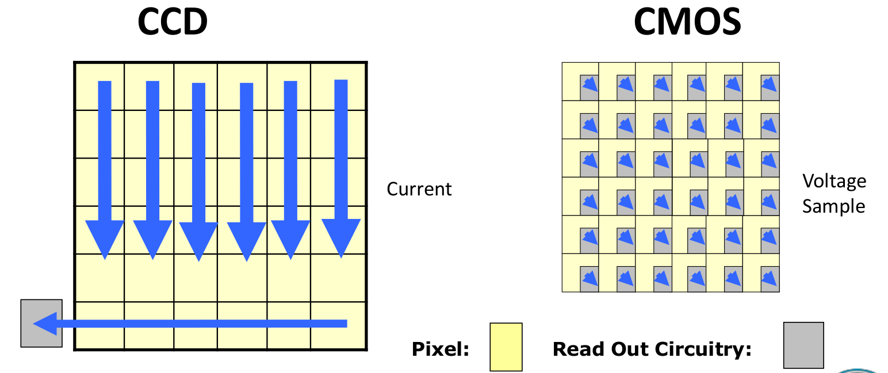

01-相机基础
相机基础概述¶
相机是机器视觉的基础，相机直接产生了相机数据。所有视觉算法都是作用在相机数据上的。相机数据的好坏，或者对相机数据的理解方式，直接决定了视觉算法的效果。
世界中的光线被检测到，于是产生了视觉。光线从某种发射源（如灯管、太阳）发射出射线，穿过空间照射到某个物体上。此时，大部分光线被吸收，我们认为没有被吸收的光线就是物体的颜色，这些光线反射进入我们的眼睛（或相机），被我们的视网膜（或图像采集器）吸收。
光线从物体发射开始，通过透镜到达眼睛或相机，然后到达视网膜或图像采集器的几何过程，是计算机视觉应用实现的重要部分。
可以说：机器视觉是建立在对相机成像过程的深刻理解的基础之上的。
相机分类¶
依据相机数据维度的不同，相机分为两类，
- 2D相机，可以产生图像数据，包括灰度图，彩色图等
- 3D相机，可以产生图形数据，包括深度图，点云图等
2D相机¶
- CCD相机
- CMOS相机
3D相机¶
根据相机的工作原理可以分为以下几种：
- TOF相机
- 双目相机
- 结构光相机
- 激光扫描仪
传感器¶
通过透镜聚焦于像平面的光线，最终需要通过传感器来生成图像。目前，有两种最流行的数字传感器技术，
- CCD, charge-coupled device 电荷耦合器件
- CMOS, complementary metal-oxide semiconductor 互补金属氧化物半导体
两者的主要区别是从芯片中读出数据的方式即读出结构不同。下图描述了两者读出方式的不同。 
1. CCD传感器¶
CCD传感器由一系列光线敏感的光电传感器组成，光电探测器能将光子转为电子并将电子转为电流。 曝光时，光电探测器累计电荷，通过转移门电路，电荷被移至串行读出寄存器从而读出。 每个光电探测器对应一个读出寄存器。 下图形象的描述了CCD传感器的工作原理。
2. CMOS传感器¶
CMOS传感器通常采用光电二极管作为光电探测器。 与CCD传感器不同，光电二极管中的电荷不是顺序地转移到读出寄存器，CMOS传感器的每一行都可以通过行和列选择电路直接选择并读出。因此，CMOS传感器可以当做随机读取存储器。
3. 彩色相机¶
CCD和CMOS传感器，对于整个可见光波段全部有响应，所以无法产生彩色图像。 为了产生彩色图像，需要在传感器前面加上彩色滤镜阵列(color filter array, CFA)使得一定范围的光到达每个光电探测器。 下图展示了最常见的Bayer滤镜阵列。这种滤镜阵列由三种滤镜组成，每种滤镜都可以透过人眼敏感的三基色红，绿，蓝中的一种。由于人眼对绿色最为敏感，所以滤镜阵列中绿色采样频率是其它两种的两倍。值得注意的是由于绿色采样是1/2，红、蓝是1/4，这就导致了严重的图像失真。通常在传感器前加上控图像失真滤光片。 CCD彩色相机的示意图：
输出信号时，像素的RGB分量是由其对应像元和其附近的像元共同构成的。
Bayer滤波法：